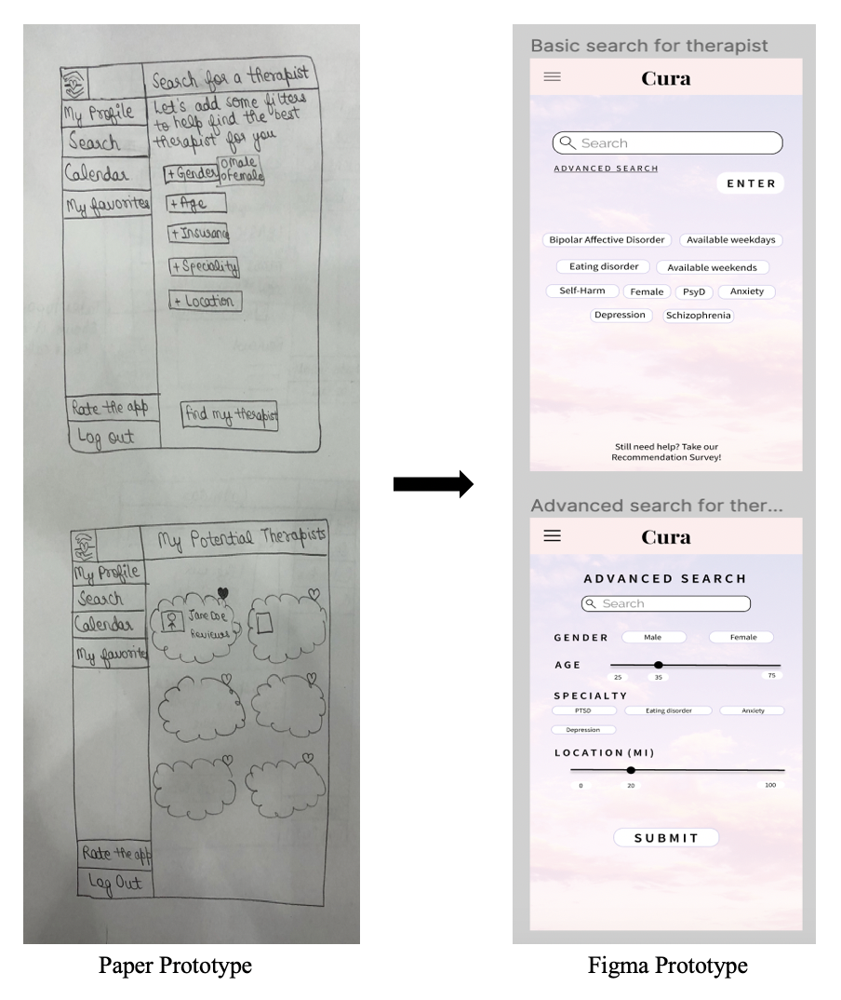
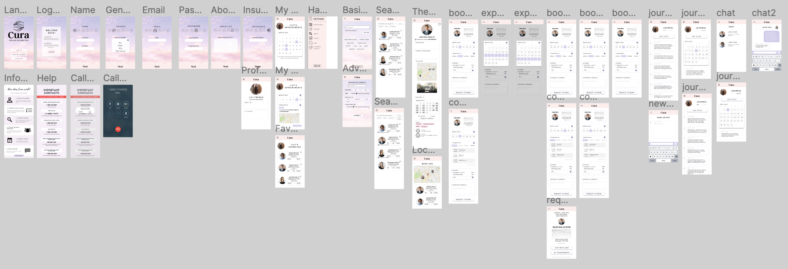
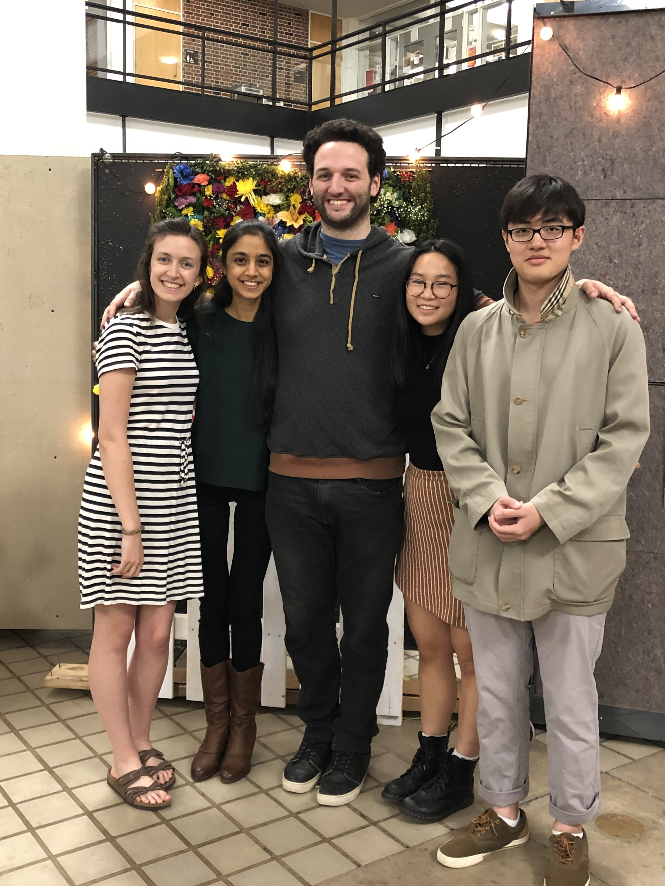

DesignU is a non-profit student organization at the University of Minnesota that partners with local clients and startups each semester to help digitalize their businesses. I worked in a group of five members in the Spring 2019 semester to help a client who wished to develop an app that would help people connect to their perfect therapist. Our goal was to deliver a high fidelity prototype to the client by the end of the semester. The project followed agile development methodology and was divided into five two week long sprints. We started off with user research by talking to students at the U of M to understand what they struggle with most when it comes to seeking help for mental health issues and what filters/features would be most helpful to them when it comes to narrowing down potential therapists. Next, we moved on to the stage of ideation and creating paper prototypes to explore which features would be necessary for an initial release of the app. After finalizing the requirements of the app, we developed a high fidelity prototype using Figma and iterated on our design for quite a while based on user testing feedback and our client’s suggestions. Lastly, we added interactivity to our prototype and presented our results at the portfolio event organized by DesignU at the end of the semester to showcase the various projects developed over the course of the semester.  
Mental health plays a major role in everyday lives. I am passionate about playing my part in helping remove the stigma associated with mental health and helping people develop a strong support system to overcome the challenges they struggle with on a daily basis. I chose to work on this project to get a chance to play my part in helping develop an app that could serve thousands of people and to also get exposure to the user interface development process along the way.
